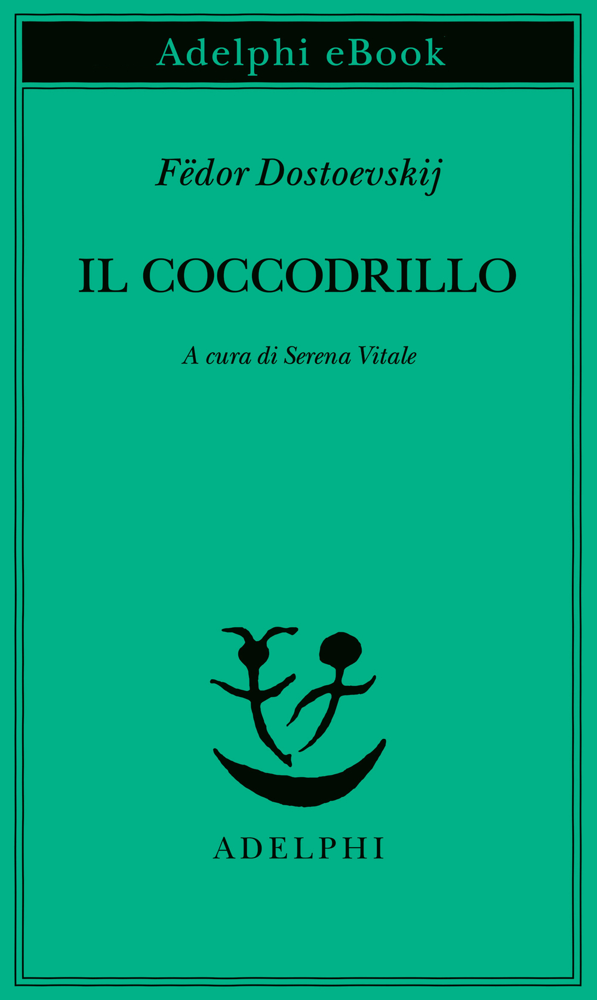

Durante una visita a un'esposizione di animali esotici, il funzionario Ivan Matveič viene inghiottito vivo — e senza troppi danni — da un enorme coccodrillo. Da lì dentro, il protagonista comincia a filosofeggiare sulla propria condizione, convinto persino che questa disavventura possa rilanciare la sua carriera. Attorno a lui, amici, moglie e passanti reagiscono con un'indifferenza grottesca che rende il racconto una satira feroce della società e della burocrazia russa dell'epoca.
Ancora non l'ho letto, quindi per ora posso solo offrirti la copertina e la mia buona intenzione.
Ripassa più avanti.
Le frasi più belle di questo libro dormono ancora tra le sue pagine, in attesa che io le scovi.